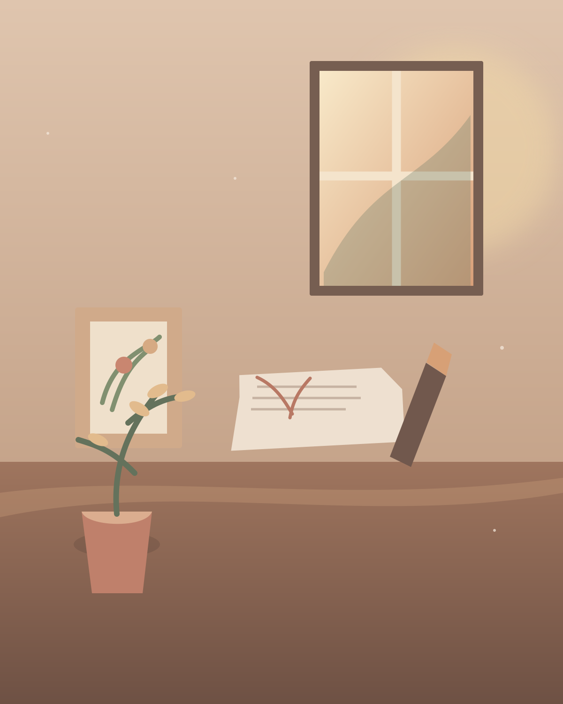
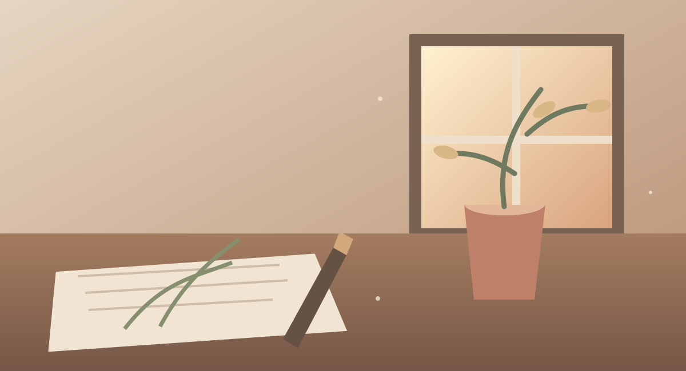

Inspiration
A colour, a found feather, the way the light hits the table. Every piece starts with noticing.
the little sparkA little studio full of wonder
Every creation tells a
unique story.

Hello, I'm Ayushi Dhiman
I believe the things we surround ourselves with should feel like something.
I’m a handmade artist, daydreamer, and collector of tiny details. In my sunlit studio, I turn slow mornings, wildflower walks, and lovely little accidents into jewellery, objects, and keepsakes made to find their way into your everyday.
Every piece begins with curiosity and ends with a little bit of my heart tucked inside. No two are quite alike — and that’s my favourite part.
A glimpse into my processThings made with feeling
Each piece is made by hand, at its own pace. Browse a little, stay a while, and find the one that speaks to you.
✳ Every piece is one of a kind, just like you.
A slower kind of making
Good things take time. Here’s how a small idea becomes something you can hold.
A colour, a found feather, the way the light hits the table. Every piece starts with noticing.
the little sparkSketches, moodboards, happy accidents. I follow a feeling until the idea finds its shape.
finding its formThen it’s time to get my hands messy. Slowly, thoughtfully, one tiny detail at a time.
made by handA final polish, a deep breath, and a little note. Ready to become part of your story.
ready for its next chapterA note is always welcome
Have a question about a piece, a little idea to share, or just want to say hi? I’d love to hear from you.
